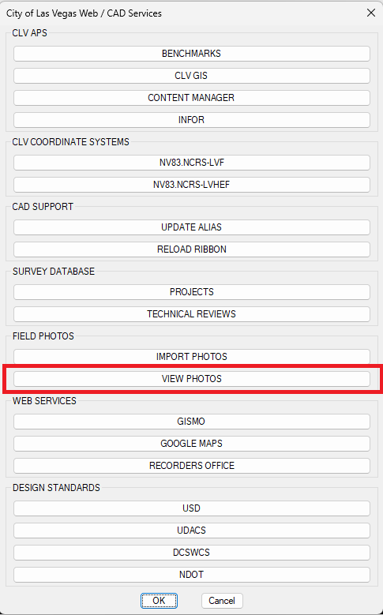
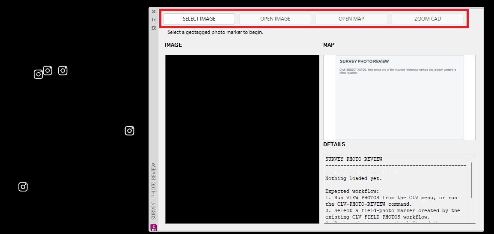
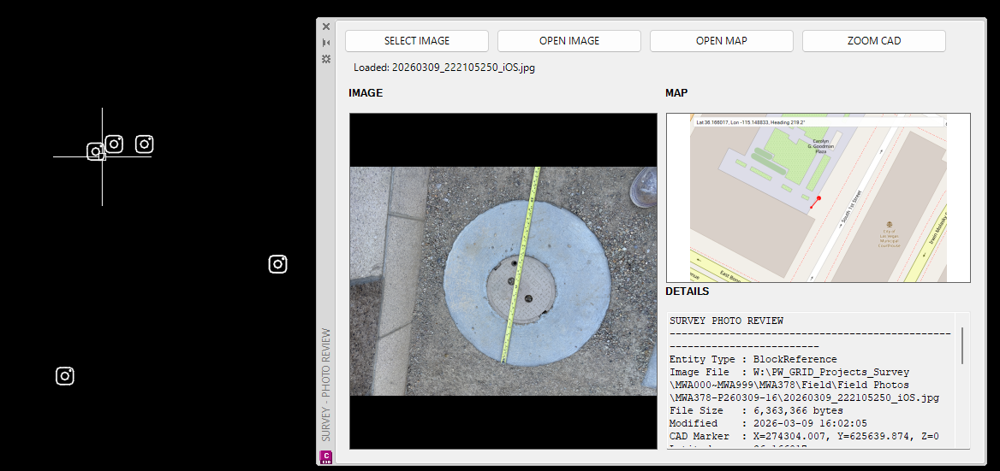

VIEW PHOTOS
Opens the field photo review palette so imported photo markers can be selected and reviewed with the original image, photo metadata, and a map location preview.
Result: The selected photo marker loads in the viewer, showing the field image, photo details, and approximate map location.
Basic Use
- Open the CLV menu and select VIEW PHOTOS under FIELD PHOTOS.
- Use the photo viewer controls to select and review an imported photo marker.
- Review the loaded image, metadata, and map location. Resize the viewer or adjust the panel widths as needed.



Notes
- VIEW PHOTOS works with markers created by the IMPORT PHOTOS workflow.
- If the image does not load, confirm the original photo file is still available at the path stored with the marker.
- The map preview is intended for quick location context and should be treated as an approximate visual reference.